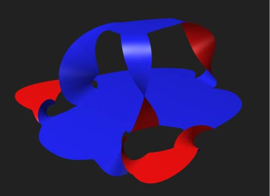

Seifert Surface Generator
View on GitHub
As part of a group project for Ithaca High School/Cornell University math seminar, I created a program in Python which takes a graphical representation of a knot and computes the Seifert Surface, genus, and Alexander Polynomial of the knot.

The Seifert Surface of a knot K is a surface that has a boundary equal to K. They're often thought about as the surface that would be formed if the knot was dipped in soap film. This program uses Seifert’s original algorithm to construct a representation of the surface in .obj file format. Seifert surfaces are important since they allow many knot invariants to be calculated. Using values already computed while creating the surface, we can easily compute an upper bound on the genus of the knot, which is defined as the minimal genus over all Seifert surfaces of the knot and is a knot invariant.
By computing a differnt knot invariant, Alexander’s Polynomial, we can also compute a lower bound for the genus of the knot. I calculated Alexander's Polynomial by implementing the original algorithm proposed in Alexander’s 1928 paper. With this addition, the program can compute both upper and lower bounds for the genus of the knot, which often co-inside, giving us an exact genus.